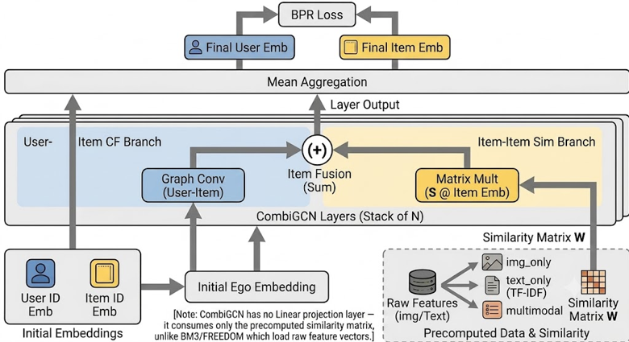
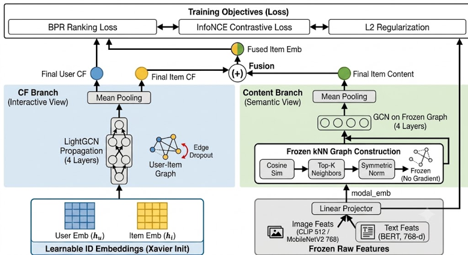

Roadmap · 5 Sections
Table of Contents
01
Problem &
Motivation
Motivation
Sparsity · Cold-start ·
Bottlenecks
02
Research
Questions
Questions
Four RQs · Objectives · Scope
03
Methodology
& Pipeline
& Pipeline
Architecture · CombiGCN · BM3
· FREEDOM
04
Model Config
& Data
& Data
VCR Dataset · 24 Configs ·
Features
05
Experiments
RQ1 · RQ2 · RQ3 · Training ·
Conclusion
Hoang Dinh Quy Vu · research topic 202 /
20
Background · Recommender Paradigms
CF, Content-Based & Hybrid —
three paradigms underlying this work
three paradigms underlying this work

Hoang Dinh Quy Vu · research topic 203 / 20
01 · Problem & Motivation
Sparse interactions expose two coupled
bottlenecks in ID-bound collaborative filtering
bottlenecks in ID-bound collaborative filtering
Fashion recommendation is hard
Users interact with very few items, leaving the user–item graph extremely
sparse
Short per-user history = near-zero signal for cold & tail items
Two coupled bottlenecks
ID-bound CF — cold / tail items have no interaction signal to learn
from
Style is visual & textual — pure interaction IDs ignore aesthetics
& descriptions entirely
Our Angle
Inject multimodal item content (visual + textual features) into graph collaborative
filtering to propagate preference signals along visual and semantic similarity edges
Key Challenge
Bridging the gap between rich item content and sparse interaction
graphs without overfitting a 9,455-interaction log
Hoang Dinh Quy Vu · research topic 204 / 20
02 · Research Questions & Objectives
Four RQs probe encoder, fusion strategy,
architecture depth, and cross-modal effects
architecture depth, and cross-modal effects
Objectives
O1
Preprocess VCR dataset (5-core, per-user 80/20 temporal split)
O2
Extract visual CLIP MBNv2 &
textual BERT features
O3
Adapt 3 multimodal GNNs on a shared LightGCN backbone
O4
Benchmark 24 configs across encoders & fusion strategies
O5
Analyse ranking quality across K ∈ {1, 5, 10, 20}
Four Research Questions
RQ1
Which visual encoder — CLIP or MobileNetV2 — suits fashion recommendation better?
RQ2
Which multimodal fusion strategy (late, attention, weighted) maximises ranking quality
on sparse logs?
RQ3
Which GNN architecture (CombiGCN, BM3, FREEDOM) performs best on the VCR dataset?
RQ4
Do single-modality features outperform cross-modal fusion?
Hoang Dinh Quy Vu · research topic 205 / 20
03 · Dataset · Vibrent Clothes Rental (VCR)
99.22% sparsity makes VCR an ideal
cold-start stress test for recommender systems
cold-start stress test for recommender systems

553
Users
2,194
Items
9,455
Interactions
99.22%
Sparsity
Split Strategy
Per-user temporal 80/20 split — training on earlier interactions,
testing on more recent ones
Why K = 5 is primary
With only 3.81 ground-truth items / user on average, top-K beyond 5
saturates Recall — K ∈ {1, 5, 10, 20} are all reported for comparison
What this means
A clothes-rental log with highly sparse, short per-user history — a realistic stress
test for cold-start recommendation
Hoang Dinh Quy Vu · research topic 206 / 20
04 · Methodology · Proposed Data Pipeline
Five stages distill raw rental logs
into model-ready multimodal graphs
into model-ready multimodal graphs
1
Initial Filtering
Apply 5-core filtering iteratively — remove users &
items with fewer than 5 interactions
2
ID Remapping
Map sparse raw IDs → dense sequential indices; build clean adjacency matrix
3
Temporal Split
Per-user chronological partition: 80% train · 20% test
4
Feature Extraction
Visual: CLIP 512-d · MobileNetV2
1280→768 PCA
Textual: BERT 768-d · TF-IDF (CombiGCN graph)
Textual: BERT 768-d · TF-IDF (CombiGCN graph)
5
GNN Training & Evaluation
Train 24 configurations; evaluate on NDCG, HR, Precision, Recall @ K ∈ {1,5,10,20}
Common settings: d = 512 · 4 GCN
layers · lr 1e-3 · early stop patience 40 ·
monitor Recall@20
Hoang Dinh Quy Vu · research topic 207 / 20
04 · Methodology · Configuration Space
24 configs: 3 models × 2 encoders × 4 fusions
— a fully crossed benchmark
— a fully crossed benchmark
Dimensions
Models (× 3)
CombiGCNBM3FREEDOM
Visual Encoders (× 2)
CLIP 512-dMobileNetV2 768-d
Fusion Strategies (× 4)
img_onlytext_onlylate
(avg)attention
Pipeline Overview
INPUT
VCR Log
→
FILTER
5-core
→
FEATURES
CLIP/MBNv2/BERT
→
GNN
LightGCN core
→
EVAL
6 metrics @ K
Total Runs
24 configurations · each trained up to
1,000 epochs with early stopping · 6 ranking metrics reported
Hoang Dinh Quy Vu · research topic 208 / 20
05 · Models · Three Architectures, One Backbone
Three architectures, one LightGCN backbone —
differing in multimodal injection strategy
differing in multimodal injection strategy
CombiGCN
Dual-graph propagation
Pre-computes item–item similarity graph from content features.
Fuses CF branch + similarity branch at each GCN layer.
Data-level fusion
BM3
Self-supervised bootstrap
Single LightGCN + raw modal projectors. Bootstrap contrastive
loss with EMA target encoder. No negative samples needed.
Model-level fusion
FREEDOM
Decoupled GNN + InfoNCE
Maintains two independent views (CF + semantic). Aligns them via
InfoNCE loss over a frozen kNN graph.
Model-level fusion
Hoang Dinh Quy Vu · research topic 209 / 20
05 · Models · CombiGCN Architecture
CombiGCN fuses content at data level via
a pre-computed item similarity graph
a pre-computed item similarity graph
Dual-Graph Propagation
Propagates representations on two graphs simultaneously
① User–Item Collaborative Graph (CF branch)
② Item–Item Content Similarity Graph (semantic branch)
Layer-wise fusion — CF + semantic representations merged at each GCN
layer

Hoang Dinh Quy Vu · research topic 210 / 20
05 · Models · BM3 Architecture
BM3 aligns modalities via bootstrap loss —
no negatives, strong implicit regularizer
no negatives, strong implicit regularizer
Bootstrap Contrastive Learning
Aligns collaborative branch & modal projectors via self-supervised bootstrap
loss
EMA (Exponential Moving Average) target encoder stabilizes training — no gradient on
target
Requires no negative samples → eliminates batch-size dependency
Acts as a strong regularizer — explains why BM3 resists overfitting on VCR's sparse log

Hoang Dinh Quy Vu · research topic 211 / 20
05 · Models · FREEDOM Architecture
FREEDOM decouples CF and semantic views,
aligned via frozen kNN + InfoNCE loss
aligned via frozen kNN + InfoNCE loss
Decoupled GNN Architecture
Maintains two independent views during training
① Collaborative View (CF): user–item interaction graph
② Semantic View: item–item kNN similarity graph
InfoNCE alignment — contrastive loss aligns GNN representations with
frozen kNN graph

Hoang Dinh Quy Vu · research topic 212 / 20
06 · Multimodal Integration Design
Data-level vs. model-level: two fundamentally
different philosophies for injecting content
different philosophies for injecting content
DATA-LEVEL · CombiGCN
Fusion happens offline at the data layer — before any model sees the
data
Visual + textual → item–item similarity matrix S (cosine,
thresholded, normalised, cached)
S acts as a static structural prior guiding
graph propagation — decoupled from feature dimensionality
Offline · Static · Interpretable
MODEL-LEVEL · BM3 · FREEDOM
Raw embeddings projected into CF space and fused end-to-end
Late fusion (multimodal): element-wise average e =
(hᵥ + hₜ) / 2
Attention gating: learnable α weights each modality — risks
overfitting on sparse data
img_only / text_only: single-modality ablation baselines
Online · Learnable · End-to-end
Hoang Dinh Quy Vu · research topic 213 / 20
07 · RQ1 — Visual Encoder
MobileNetV2 leads in late-fusion configs;
CLIP dominates modal-only — no universal winner
CLIP dominates modal-only — no universal winner
NDCG@10 — Late Fusion configs
MobileNetV2 ■ vs CLIP
■
Verdict
MobileNetV2 wins inside each model's best (late-fusion) config — local
texture beats CLIP's coarse semantics for styling
But CLIP wins img_only & text_only
Encoder superiority is configuration-dependent, not universal — CLIP's
semantic richness helps when only one modality is active
Why MBNv2 wins late-fusion
MobileNetV2 captures fine-grained local texture patterns (fabric, pattern, cut) that
matter for fashion styling, complementing BERT's textual signals
Hoang Dinh Quy Vu · research topic 214 / 20
08 · RQ2 & RQ4 — Fusion & Cross-Modal Ablation
Late fusion beats attention & single-modality —
sparse logs benefit from cross-modal integration
sparse logs benefit from cross-modal integration
NDCG@10 — Fusion type ablation (MBNv2)
Late ■ vs Attention
■
Ablation Study (NDCG@10)
| Model (MBNv2) | img only | text only | multimodal | attention |
|---|---|---|---|---|
| BM3 | 0.0150 | 0.0149 | 0.0186 | 0.0101 |
| CombiGCN | 0.0085 | 0.0071 | 0.0175 | 0.0151 |
| FREEDOM | 0.0062 | 0.0031 | 0.0081 | 0.0088 |
Verdict
Late fusion is best & parameter-free. Attention gating hurts: BM3
−46% · CombiGCN −14%
Why attention fails here
Trainable attention weights overfit 9,455 sparse interactions — only FREEDOM sees a weak
+9% gain, likely due to its already-decoupled architecture dampening the overfitting effect
Takeaway (RQ4 Answer)
On sparse logs, simplicity wins — multimodal late fusion (average) consistently outperforms visual-only and text-only variants.
Hoang Dinh Quy Vu · research topic 215 / 20
09 · RQ3 — Model Comparison
BM3 > CombiGCN > FREEDOM — bootstrap
regularization dominates on sparse rental data
regularization dominates on sparse rental data
Best configuration per model
| Model | Config | NDCG@5 | NDCG@10 |
|---|---|---|---|
| BM3 | MBNv2 · late | 0.0162 | 0.0186 |
| CombiGCN | MBNv2 · late | 0.0137 | 0.0175 |
| FREEDOM | MBNv2 · attention | 0.0084 | 0.0088 |
At K = 1: BM3 = CombiGCN tie (0.0127) — BM3 advantage emerges at K ≥ 5 where bootstrap
regularization compounds
Hierarchy
BM3 › CombiGCN
› FREEDOM
BM3 leads K ≥ 5
Bootstrap contrastive acts as implicit regularizer — BM3's self-supervised alignment
prevents rank degradation at larger K
FREEDOM −53% vs BM3
kNN graph noise on a small 2,194-item catalog propagates incorrect semantic similarity —
FREEDOM's frozen graph is a liability at this scale
Hoang Dinh Quy Vu · research topic 216 / 20
10 · Training Dynamics & Overfitting
BM3's bootstrap loss prevents overfitting;
CombiGCN peaks early then degrades −70%
CombiGCN peaks early then degrades −70%
Peak validation epoch (best config)
CombiGCN@ epoch 280
Peaks early, then loss falls −70% while test quality drops. ~2.5×
faster than BM3 → useful if training budget is tight (with early stopping).
BM3@ epoch 720
Slow but robust — loss falls only −21% after peak. Bootstrap
contrastive acts as a strong implicit regularizer.
FREEDOM@ epoch 960
Late & flat — loss nearly stationary after peak. Frozen kNN prevents
destabilization but also limits adaptation.
Convergence Summary
| Model | Peak epoch | Loss drop | Verdict |
|---|---|---|---|
| CombiGCN | 280 | −70% | Overfit risk |
| BM3 | 720 | −21% | Robust |
| FREEDOM | 960 | ~0% | Flat |
Practical Guidance
Use CombiGCN when training budget is tight (with early stopping). Use
BM3 when ranking quality matters most — its regularization pays off at K ≥ 5.
Hoang Dinh Quy Vu · research topic 217 / 20
11 · Conclusion & Contributions
Four reproducible findings on multimodal GNN
for sparse fashion recommendation
for sparse fashion recommendation
01
Multimodal late fusion helps
Within every evaluated architecture, fusing visual +
textual beats single-modality variants
02
Encoder choice is conditional
MobileNetV2 leads in late-fusion; CLIP wins
visual-only — no universal ranking across all configs
03
Simpler fusion is stronger
Parameter-free late fusion is robust; trainable
attention overfits the 9,455-interaction sparse log
04
Architecture × depth matters
BM3 best for K ≥ 5; CombiGCN matches at K = 1; FREEDOM
requires larger catalogs than VCR provides
Hoang Dinh Quy Vu · research topic 218 /
20
12 · Limitations & Future Work
Single-run estimates on near-floor metrics —
findings are directional, not definitive
findings are directional, not definitive
Current Limitations
Single-run estimates — no multiple seeds or significance tests; narrow
margins (BM3 vs CombiGCN) are indicative trends
Near-floor absolute metrics — extreme sparsity (3.81 test items/user)
keeps HR@10 ~0.07; focus is relative comparison
No standalone baselines — LightGCN-only and popularity baselines not
benchmarked; d = 512 fixed without ablation
Static offline features — pre-extracted embeddings ignore temporal
trends in fashion
Future Work
F1
Multi-seed evaluation + significance testing to confirm BM3 vs CombiGCN margin
F2
Benchmark standalone LightGCN baseline; ablate embedding dimension d
F3
Cross-dataset validation — test on larger fashion catalog to verify FREEDOM's kNN
hypothesis
F4
Temporal-aware feature extraction and seasonal trend modeling
Hoang Dinh Quy Vu · research topic 219 / 20
Thank You
Questions & Discussion
Presented by
Hoang Dinh Quy Vu · 252805008
Advised by
Dr. Tran Trung Tin
Institution
Ton Duc Thang University
BM3CombiGCNFREEDOMCLIPMobileNetV2BERT
Appendix · Mathematical Formulations
CombiGCN — Dual-Graph Propagation Equations
1. Symmetric Graph Normalization
$$\mathbf{S} = \mathbf{D}_s^{-1/2} \mathbf{W} \mathbf{D}_s^{-1/2}$$
- $\mathbf{W} \in \mathbb{R}^{|\mathcal{I}| \times |\mathcal{I}|}$: Cosine similarity matrix thresholded at $0.5$.
- $\mathbf{D}_s$: Diagonal degree matrix of $\mathbf{W}$.
- $\mathbf{S}$: Normalised item similarity adjacency matrix.
- $\mathbf{D}_s$: Diagonal degree matrix of $\mathbf{W}$.
- $\mathbf{S}$: Normalised item similarity adjacency matrix.
2. User Representation Update
$$\mathbf{e}_u^{(k+1)} = \sum_{i \in \mathcal{N}_u} \frac{1}{\sqrt{|\mathcal{N}_u| |\mathcal{N}_i|}} \mathbf{e}_i^{(k)}$$
- User updates are driven solely by the user-item interaction graph $\mathcal{G}_{ui}$.
3. Item Dual-Graph Fusion
$$\mathbf{e}_i^{(k+1)} = \mathbf{e}_{i, \text{CF}}^{(k+1)} + \mathbf{e}_{i, \text{Sim}}^{(k+1)}$$
- Collaborative Filtering branch (CF):
$$\mathbf{e}_{i, \text{CF}}^{(k+1)} = \sum_{u \in \mathcal{N}_i} \frac{1}{\sqrt{|\mathcal{N}_i| |\mathcal{N}_u|}} \mathbf{e}_u^{(k)}$$
- Content-Similarity branch (Sim):
$$\mathbf{e}_{i, \text{Sim}}^{(k+1)} = \sum_{j \in \mathcal{S}_i} S_{ij} \mathbf{e}_j^{(k)}$$
4. Layer-wise Mean Pooling
$$\mathbf{e}_u = \frac{1}{N+1}\sum_{k=0}^{N} \mathbf{e}_u^{(k)}, \quad \mathbf{e}_i = \frac{1}{N+1}\sum_{k=0}^{N} \mathbf{e}_i^{(k)}$$
Hoang Dinh Quy Vu · research topic 2A1 / A3
Appendix · Mathematical Formulations
BM3 — Self-Supervised Bootstrap Equations
1. Modal Projection & Fusion
$$\mathbf{h}_{v,i} = \mathbf{W}_v \mathbf{x}_{vis,i} + \mathbf{b}_v, \quad \mathbf{h}_{t,i} = \mathbf{W}_t \mathbf{x}_{txt,i} + \mathbf{b}_t$$
$$\mathbf{e}_{i, \text{modal}} = \frac{\mathbf{h}_{v,i} + \mathbf{h}_{t,i}}{2}$$
- Project raw visual/textual embeddings to collaborative filtering space ($d = 512$).
2. EMA Target Encoder Update
$$\mathbf{\Theta}_{target} \leftarrow m \mathbf{\Theta}_{target} + (1 - m) \mathbf{\Theta}_{online}$$
- $m = 0.995$ momentum. No gradient flows through the target encoder to prevent collapse.
3. Asymmetric Bootstrap Loss
$$\mathcal{L}_{boot}(\mathbf{p}, \mathbf{z}) = 2 - 2 \frac{\mathbf{p}^T \mathbf{z}}{\|\mathbf{p}\| \|\mathbf{z}\|}$$
$$\mathcal{L}_{CL} = \frac{1}{2} \left[ \mathcal{L}_{boot}(q(\mathbf{e}_{i, \text{CF}}), sg(\mathbf{e}_{i, \text{modal}})) + \mathcal{L}_{boot}(q(\mathbf{e}_{i, \text{modal}}), sg(\mathbf{e}_{i, \text{target}})) \right]$$
- $q(\cdot)$: 2-layer MLP predictor head to break symmetry.
- $sg(\cdot)$: Stop-gradient operator.
- $sg(\cdot)$: Stop-gradient operator.
4. Joint Optimization Objective
$$\mathbf{h}_i = \mathbf{e}_{i, \text{CF}} + \mathbf{e}_{i, \text{modal}}$$
$$\mathcal{L}_{total} = \mathcal{L}_{BPR} + \lambda_1 \mathcal{L}_{reg} + \lambda_2 \mathcal{L}_{CL}$$
- Fuses CF & Modal embeddings; optimized using BPR loss + $\mathcal{L}_{CL}$ weight ($\lambda_2 = 0.2$).
Hoang Dinh Quy Vu · research topic 2A2 / A3
Appendix · Mathematical Formulations
FREEDOM — Decoupled Graph & InfoNCE Equations
1. Frozen kNN Graph Construction
$$\mathbf{A}^{knn} = \mathbf{D}_{knn}^{-1/2} \mathbf{W}^{knn} \mathbf{D}_{knn}^{-1/2}$$
- Constructed at initialization by keeping top-$k = 10$ neighbors based on modal cosine similarities. Frozen during training.
2. Decoupled Content Propagation
$$\mathbf{e}_{i, \text{content}}^{(k+1)} = \sum_{j \in \mathcal{N}_k(i)} A^{knn}_{ij} \mathbf{e}_{j, \text{content}}^{(k)}$$
- $\mathbf{e}_{i, \text{content}}^{(0)} = \mathbf{e}_{i, \text{modal}}$. Learns pure semantic representations over the frozen structures.
3. InfoNCE Contrastive Alignment
$$\mathcal{L}_{CL} = -\sum_{i \in \mathcal{B}} \ln \frac{\exp\left(s(\mathbf{e}_{i, \text{CF}}, \mathbf{e}_{i, \text{content}}) / \tau\right)}{\sum_{j \in \mathcal{B}} \exp\left(s(\mathbf{e}_{i, \text{CF}}, \mathbf{e}_{j, \text{content}}) / \tau\right)}$$
- $\mathcal{B}$: Mini-batch.
- $s(\cdot, \cdot)$: Cosine similarity.
- $\tau = 0.2$: Temperature parameter.
- $s(\cdot, \cdot)$: Cosine similarity.
- $\tau = 0.2$: Temperature parameter.
4. Final Fused Joint Loss
$$\mathbf{e}_i = \mathbf{e}_{i, \text{CF}} + \mathbf{e}_{i, \text{content}}$$
$$\mathcal{L}_{total} = \mathcal{L}_{BPR} + \lambda_1 \mathcal{L}_{reg} + \lambda_2 \mathcal{L}_{CL}$$
- Contrastive alignment loss weight is set to $\lambda_2 = 0.1$.
Hoang Dinh Quy Vu · research topic 2A3 / A3